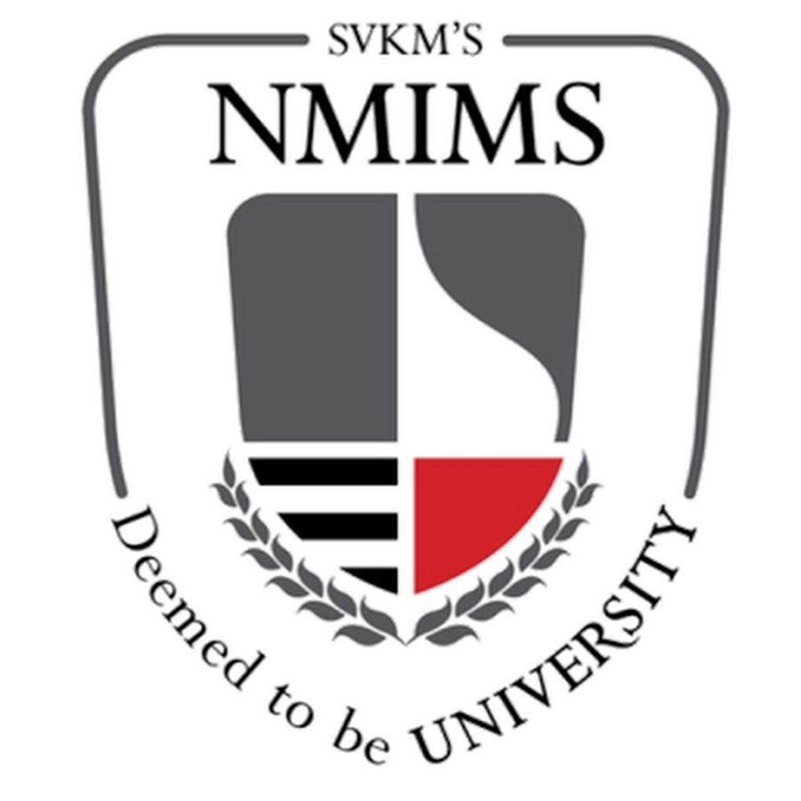

Spotify Lyrics
About Organization:
NMIMS has over the last 35 years grown from a management institute offering a single product namely MBA education to a Deemed to be University offering multiple products through separate schools in Business Management, Pharmacy, Technology Management & Engineering, Hospitality, Architecture, Science, Commerce, Economics and Law. The SVKM's NMIMS Navi Mumbai Campus is located in a natural scenic serene environment which provides an ideal atmosphere for pursuing higher education programs in management away from the noise and pollution of a metro city. SVKM's NMIMS Navi Mumbai Campus provides an idyllic environment to engage in learning and the unique distinction of gaining ringside insight to metropolitan corporate dynamics against a budding and emerging business hub.
Work Description:
Spotify Lyrics Displayer is a program written in Python3,
which displays lyrics for ongoing music in your windows
command prompt. The project uses regular expressions and
Spotify Library. Program can be executed by playing
a song from spotify in the background and running the
executable file. The project is part of academic project
during Semester 5 for subject Software Engineering.
Project Link:
Link to project files in Github:-
https://github.com/CryptoLeo-3000/SpotifyLyrics.git